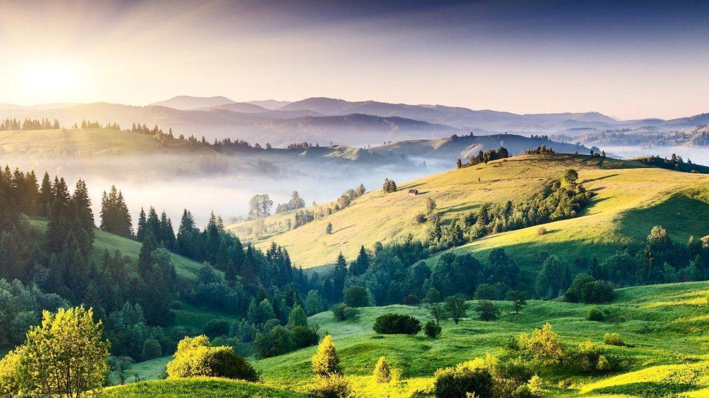
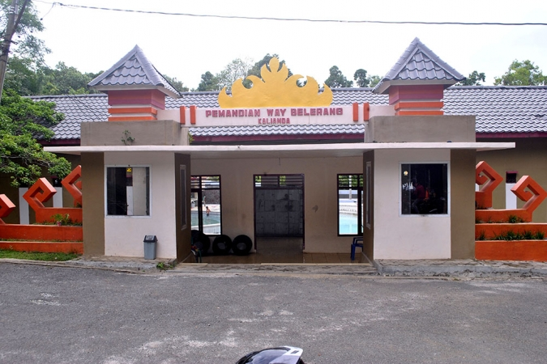
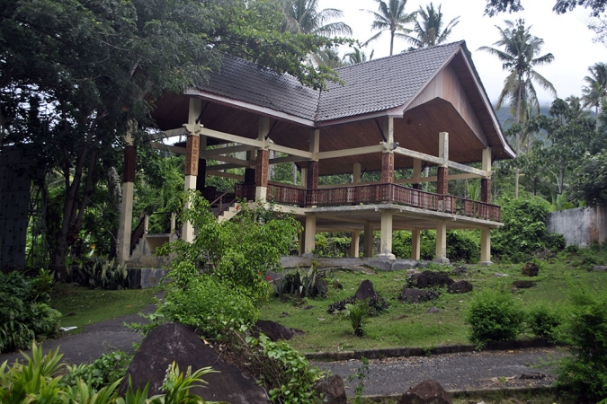
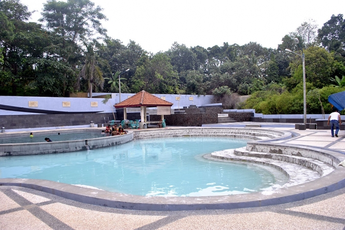
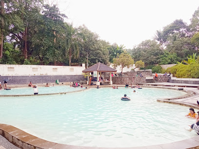

Way Belerang
Menikmati hangatnya air belerang di tengah suasana alami kaki Gunung Rajabasa, salah satu daya tarik wisata Desa Buah Berak.
Hangatnya alam,
tenangnya suasana.
Way Belerang merupakan pemandian air panas yang berada di Desa Buah Berak, Kecamatan Kalianda, Kabupaten Lampung Selatan.
Destinasi ini menawarkan pengalaman berendam di air belerang sambil menikmati suasana yang rindang dan sejuk. Lokasinya berada di kawasan kaki Gunung Rajabasa dan relatif dekat dari pusat Kota Kalianda.
Dengan suasana alam yang masih asri, Way Belerang cocok menjadi pilihan untuk bersantai bersama keluarga maupun menikmati waktu luang.
Suasana Way Belerang
Geser galeri untuk melihat lebih banyak foto destinasi.




← Geser kiri / kanan →
Yang tersedia
untuk pengunjung.
Beberapa fasilitas yang tercatat tersedia di kawasan wisata membantu pengunjung menikmati kunjungan dengan lebih nyaman.
Temukan Way Belerang
di Desa Buah Berak.
Way Belerang berada di Desa Buah Berak, Kecamatan Kalianda, Kabupaten Lampung Selatan, Provinsi Lampung.